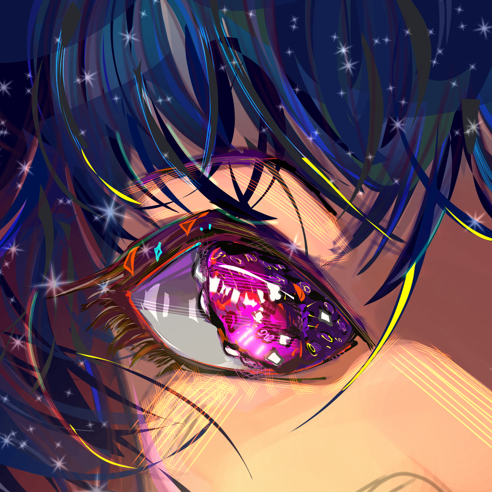
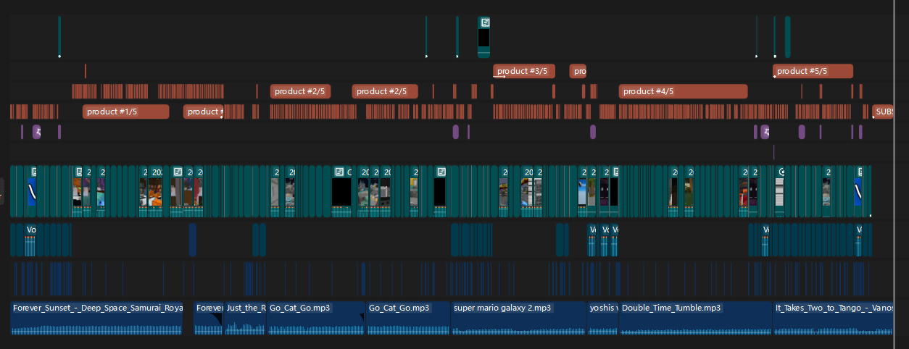

Graphic Design
I have made many things in softwars like Adobe Illustrator or Asperite, here's something I'm proud of that was made with Illustrator (and the help of a tablet).

I am a current Information Science Student, soon to be graduate from Michigan State University looking to get into the social media industry. I have been running successful social media accounts with thousands of followers over the last 8 years, with many skills surrounding the field. I have experience with graphic design, video creation, networking, managing employees, and more!
I am mainly familiar with Adobe software like Premeire, Illustrator, and Photoshop, but also have worked with others in the past and are familiar with many online alternatives!
I have made many things in softwars like Adobe Illustrator or Asperite, here's something I'm proud of that was made with Illustrator (and the help of a tablet).

Experience editing short form videos for platforms like Instagram and TikTok, and long form (hour+) long videos on YouTube. Have worked with editing software such as Premeire Pro, Davinci Resolve, and Sony Vegas, but am confident I could learn others if need be! Here's one of my average editing timelines!

Worked with/reached out to brands to negotiate one-time brand deals or long-term partnerships for creators. Examples of brands I've worked with include Microsoft, Makeship, CashApp, and more!
Email:
lincol61@msu.edu